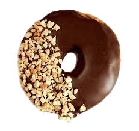

Donut
Bahan-bahan:
- 250 gr tepung terigu (merk apa aja bagus).
- 1/2 sct ragi instan, me: fermipan (-+5gr).
- 1 butir telur.
- 5 sendok gula pasir.
- 1 sdm Margarin (jika mentega, tambahkan garam sedikit).
- 1/2 gelas Air matang.
- Coklat (saya pakai cocolatos).
- Minyak goreng.
Cara Membuat:
- Campurkan air, fermipan, dan gula pasir 1sdm. Tunggu 15menit sampai berbusa.
- Campurkan tepung terigu, telur, sisa gula pasir, dan campuran fermipan.
- Uleni dengan tangan hingga setengah kalis, tambahkan margarin.
- leni hingga kalis, lalu diamkan kurleb 1jam dengan ditutup kain bersih/serbet.
- Setelah mengembang 2x lipat, uleni lagi/tekan2 agar udara keluar.
- Setelah diuleni, cetak bulat2 sesuai selera. Diamkan 15 menit.
- Setelah mengembang lg, cetak sesuai selera. Kemudian diamkan 15mnt.
- Goreng dengan minyak jangan terlalu panas dan sebentar saja.
- Angkat. Sajikan. Taburi gula halus untuk donat lubang atau toping selera.
- Donat coklat siap untuk disajikan.

Terima kasih telah membeli!
Yukk, monggo di beli juga menu lainnya!